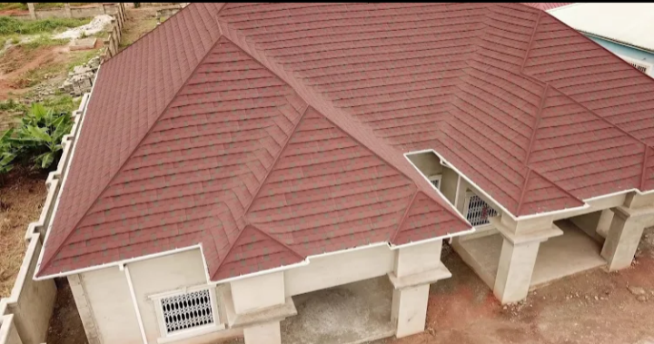

Roofing
Thoughtful roofing work for the building in front of you—from the structure and covering to the details that protect the finished space.
Enquire ↗Roofing & construction in Accra
Your building deserves work that is considered from the first measurement to the final finish. Starlight is an Accra-based roofing and construction company around New Legon Road.

01 — Who we are
We are Starlight Roofing and Construction, a Ghanaian construction company listed around New Legon Road in Accra. Our name says exactly where we work: roofing and construction.
Whether you are planning a new build or need the right team for the next stage of your project, start with a clear conversation.
Start a conversation“The details are what make a building feel finished.”
Starlight Roofing & Construction02 — What we do
We keep our focus clear and our approach practical. Tell us what you are building, and we will discuss the right way forward.
Thoughtful roofing work for the building in front of you—from the structure and covering to the details that protect the finished space.
Enquire ↗Practical construction support for projects in Accra. Share your plans, current stage and priorities so we can understand the work clearly.
Enquire ↗03 — In the field
From steel trusses to finished roof lines, the work happens on site. Here is a look at the kind of roofing and construction activity behind our work.
04 — The approach
Call or send an enquiry with your location, building type and what you need done.
We discuss the project on its own terms—your plans, priorities, timing and current stage.
Once the scope is clear, we can agree on the practical next steps for your project.
05 — Get in touch
Based around New Legon Road, Accra. For a roofing or construction enquiry, call us directly.
Call 054 630 0304New Legon Road
Accra, Ghana
Mon–Sat: 08:00–17:00
Sun: 10:30–17:00